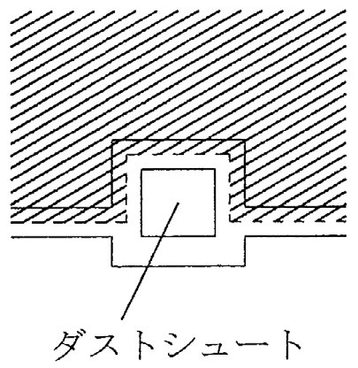
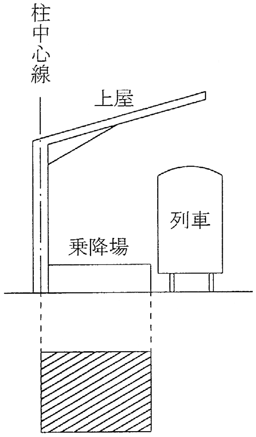

建物の出窓の高さが1.5メートル未満であっても、出窓の下部が床面と同一の高さであれば、床面積に算入する。
解答：×
出窓は高さ1.5メートル以上で、下部が床面と同一の高さのものに限る。
準則82条11号は二つの条件を並べている。下部が床と同じ高さでも、高さが1.5メートルに満たなければ算入しない。人が立って使える空間かどうかで線を引いている。
根拠準則82条11号
出典：法務省 令和4年度 土地家屋調査士試験を加工して作成
令和4年度・問12
令和4年度土地家屋調査士試験の問12です。全5肢の問題文と○×の解答を掲載しています。
建物の出窓の高さが1.5メートル未満であっても、出窓の下部が床面と同一の高さであれば、床面積に算入する。
解答：×
出窓は高さ1.5メートル以上で、下部が床面と同一の高さのものに限る。
準則82条11号は二つの条件を並べている。下部が床と同じ高さでも、高さが1.5メートルに満たなければ算入しない。人が立って使える空間かどうかで線を引いている。
根拠準則82条11号
出典：法務省 令和4年度 土地家屋調査士試験を加工して作成
建物の屋上にある建物内部との出入口としてのみ使用される階段室であっても、外気分断性がある場合には、床面積に算入する。
解答：×
屋上の出入口としてだけ使う階段室は、床面積に算入しない。
準則82条6号が算入するとしているのは、建物の各階を貫いて上下をつなぐ階段室である。屋上への出入口としてしか使われない小さな塔屋は、その建物の用途に供される空間として使われていない。外気を分断していても、算入すべき床が生まれているわけではない。
根拠にした通達・先例の原文には、当たれていない部分があります。
根拠準則82条6号昭38.10.22民甲2933号
出典：法務省 令和4年度 土地家屋調査士試験を加工して作成
建物に附属する屋根及び手すりの付いている屋外の階段は、床面積に算入しない。
解答：○
出典：法務省 令和4年度 土地家屋調査士試験を加工して作成
次の〔図1〕のとおり、建物の内部にあるダストシュートの一部が外部にまたがっている場合には、斜線部分のみを床面積に算入する。

解答：×
内部にあるダストシュートは、外側に及んでいる部分も含めて全部算入する。
準則82条10号は、建物の内部に煙突やダストシュートがある場合について、その一部が外側に及んでいるものを含むとかっこ書で明示したうえで、その部分は各階の床面積に算入するとしている。外側にあるときに算入しないのは、全体が外に出ている場合である。
根拠準則82条10号
出典：法務省 令和4年度 土地家屋調査士試験を加工して作成
次の〔図2〕のとおり、停車場の上屋を有する乗降場がある場合には、その乗降場の床面積は、斜線部分の面積により計算する。

解答：○
乗降場の床面積は、上屋の占める部分で計算する。
準則82条2号がそう定めている。屋根のないところは雨風にさらされる場所で、建物の内部といえる空間になっていない。準則77条1号アが乗降場を建物として取り扱うのも上屋を有する部分に限っている。
出典：法務省 令和4年度 土地家屋調査士試験を加工して作成
解説は、条文・通達・判例の原典に当たって書いたものです。根拠として挙げた条文はリンク先でそのまま読めます。